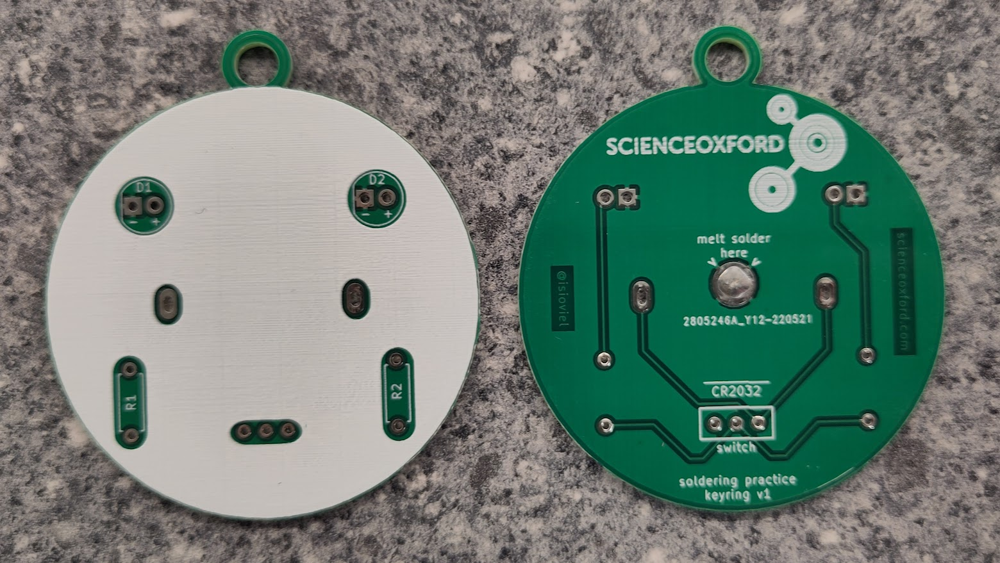

Session 3: soldering and electronics
circuit basics
At a basic level, a circuit is a circular path through which electricity flows. The first circuits we are going to create today include:
- A source of electricity, for example a battery.
- Something to make use of the electricty, for example an LED.
LED is short for light emitting diode.
- light emitting = something that gives off light when electricity flows through it
- diode = a component that only allows electricty to flow through it in one direction
Test out the diode properties of your LEDs by connecting them to a battery, like in the picture below. If it doesn't light up, turn it around to let the electricity flow through in the other direction.

We cannot always connect an LED directly to a battery, for a few different reasons.
- Sometimes a battery can provide too much voltage or current for the LED, which would cause it to burn out.
- Some colours of LEDs need less voltage to turn on than others, and can stop other LEDs from turning on.
Test this by connecting a blue LED and a red LED at the same time - what happens?
We can get around these issues by using another component, a resistor.
Resistors resist the flow of electricity. We are going to use them to provide less current to an LED, so that, for example, a red LED doesn't use it all up before a blue LED can turn on!
To work out how much resistance a resistor is providing, they have coloured stripes on them. For this workshop, we have given set values, but if you are interested in knowing more, have a look at this resistor colour code calculator.
printed circuit boards
A printed circuit board, or PCB for short, has the wires of the circuit inside the board. Holes are added for you to put your components into, and are designed to be soldered.
Look careful at the PBC you have been given - can you work out where the LEDs, resistors and battery will go?
The extra component you have been given is a switch. This either lets electricity flow, or stops the electricty flow, depending on which way you push it.
See if you can spot where the wires inside the board are, and trace the connections between components.
soldering safety
A soldering iron heats up to approximately 300°C - it is very important that you are careful when using the iron, to reduce the risk of burning yourself and other people around you.
The most important rule, is to put the iron back in the holder when you are not using it. Never leave it resting on your work surface.
If you burn yourself, carefully put the iron away (or ask someone to do this for you), tell an adult what has happened, and run the burn under cold water for at least 10 minutes.
how to solder
Kitronik have a great 10-step guide to soldering, which includes pictures of good joints, and show some common mistakes.
For your practice soldering, you will make a keyring or pendant. It is a basic circuit to turn two LEDs on or off with the switch.
Step-by-step instructions for soldering the practice boards are provided here:
Once you have finished the soldering, you can use markers to decorate it.
If you would like more practice before soldering your robot's power board, we have other practice boards for you to choose from.
understanding your air quality monitor control board
The board you are going to assemble today replicates the breadboard you used in Session 1. It links together the ESP32 with the sensor board, RGB LED, push button and LCD screen.
Because the ESP32, the sensor board and the LCD screen are delicate components, instead of soldering them directly to the board, you will add pin headers. This means that no heat is being applied to them, and they can be replaced if needed.
soldering your board
Step-by-step instructions for soldering your robot board, are provided here: